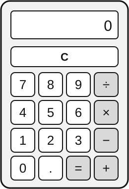

HESI Reference Sheet
Some of these values are rounded, such as 1 ounce = 30 mL and 1 kilogram = 2.2 pounds. These are the standard values used on the HESI.
Formulas
Percent Change
To find the percent change from an old value to a new value:
Rectangles
For a rectangle with length \(l\) and width \(w\):
Triangles
For a triangle with base \(b\) and height \(h\):
Circles
For a circle with radius \(r\):
Temperature Conversions
To convert from \(^\circ\)C to \(^\circ\)F:
To convert from \(^\circ\)F to \(^\circ\)C:
Within the Metric System
| 1 kilogram (kg) | 1,000 grams (g) |
| 1 kilometer (km) | 1,000 meters (m) |
| 1 gram (g) | 1,000 milligrams (mg) |
| 1 liter (L) | 1,000 milliliters (mL) |
| 1 meter (m) | 100 centimeters (cm) |
| 1 meter (m) | 1,000 millimeters (mm) |
| 10 millimeters (mm) | 1 centimeter (cm) |
Length Conversions
| 1 inch | 2.54 centimeters |
| 1 foot | 12 inches |
| 1 yard | 3 feet = 36 inches |
| 1 mile | 5,280 feet |
| 1 foot | 0.3048 meters |
Household to Metric Conversions
| 3 teaspoons (tsp) | 1 tablespoon (Tbsp) |
| 1 teaspoon (tsp) | 5 milliliters (mL) |
| 1 tablespoon (Tbsp) | 15 milliliters (mL) |
| 1 fluid ounce (oz) | 30 milliliters (mL) |
| 1 cup | 8 fluid ounces (oz) |
| 1 pint (pt) | 16 fluid ounces (oz) |
| 1 quart (qt) | 32 fluid ounces (oz) |
| 1 gallon (gal) | 128 fluid ounces (oz) |
| 1 gallon (gal) | 3.785 liters (L) |
Weight Conversions
| 1 pound (lb) | 16 ounces (oz) |
| 1 kilogram (kg) | 2.2 pounds (lb) |
| 1 ounce (oz) | 28.35 grams (g) |
Order of Operations: PEMDAS
- P: Parentheses
- E: Exponents
- M/D: Multiplication and Division, from left to right
- A/S: Addition and Subtraction, from left to right
Multiplication does not always come before division, and addition does not always come before subtraction. Multiplication and division have equal priority, so you perform whichever comes first when working from left to right. The same rule applies to addition and subtraction.
Roman Numerals
| Roman Numeral | Value |
|---|---|
| I | 1 |
| V | 5 |
| X | 10 |
| L | 50 |
| C | 100 |
| D | 500 |
| M | 1000 |
Rule 1
When a smaller numeral appears after a larger numeral, add.
- VI = 5 + 1 = 6
- XIII = 10 + 1 + 1 + 1 = 13
Rule 2
When a smaller numeral appears before a larger numeral, subtract.
- IV = 5 − 1 = 4
- IX = 10 − 1 = 9
Example 1
Convert MCCLIII to Hindu-Arabic form.
| M | C | C | L | I | I | I |
| 1000 | 100 | 100 | 50 | 1 | 1 | 1 |
Since each symbol is followed by an equal or smaller symbol, we add all of the values.
1000 + 100 + 100 + 50 + 1 + 1 + 1 = 1253
MCCLIII = 1253
Example 2
Convert MCMXLIV to Hindu-Arabic form.
| M | C | M | X | L | I | V |
| 1000 | 100 | 1000 | 10 | 50 | 1 | 5 |
Since C comes before M, X comes before L, and I comes before V, we use subtraction for those pairs.
| M | CM | XL | IV |
| 1000 | 900 | 40 | 4 |
1000 + 900 + 40 + 4 = 1944
MCMXLIV = 1944
The Calculator on the HESI
The HESI allows only a basic four-function calculator, like the one shown: add, subtract, multiply, and divide.

There are no keys for exponents or square roots. Be ready to work out exponents with multiplication, for example \(5^2 = 5 \times 5 = 25\). Practice your conversions and percents with this kind of calculator, so nothing surprises you on test day.